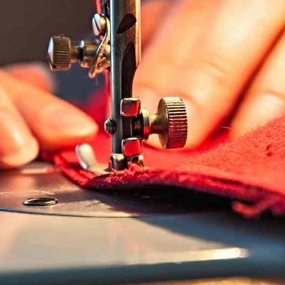

Saree blouses, Punjabi suits, hemming and bespoke dressmaking — every stitch in Geeta's hands, by appointment, from a quiet studio in Pukete.

5 km
Free pickup & drop-off radius
[X]+
Years at the machine
Geeta to confirm
687
Followers on Facebook
No. 01 · placeholder
Mother-of-the-bride saree blouse
No. 02 · placeholder
Festive Punjabi suit
No. 03 · placeholder
Everyday salwar kameez
No. 04 · placeholder
Dress alteration — occasion wear
No. 05 · placeholder
Bridal lehenga fitting
No. 06 · placeholder
School uniform hem
Note to Gourav. Every tile above is a placeholder. Each one will be replaced with a real photograph of Geeta's work, a real turnaround time, and — where the customer gives permission — a real name (e.g. "Priya's mother-of-the-bride saree blouse"). We'll collect 6 – 12 pieces during Phase 0; phone photos in natural light are fine, we retouch and frame.